Odontologia contemporânea
Um sorriso que parece verdadeiramente seu.
Tecnologia, precisão e cuidado humano para transformar a forma como você sorri e se sente.
avaliações
- +12anos de experiência
- +3.800pacientes atendidos
- 8especialistas
- 4tecnologias digitais
Odontologia feita para pessoas,
não apenas para dentes.
Na Elyra, cada tratamento começa ouvindo você. Unimos planejamento digital, especialistas experientes e uma abordagem cuidadosa para alcançar resultados naturais e duradouros.
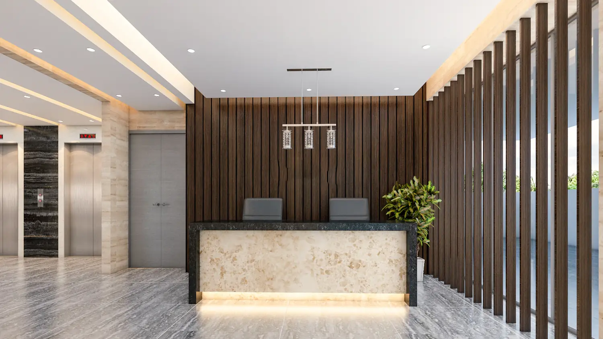
- 01
Precisão
Planejamentos personalizados com tecnologia digital.
- 02
Naturalidade
Resultados pensados para preservar sua identidade.
- 03
Cuidado
Atendimento próximo em todas as etapas.
- Conhecer especialistas
Cuidado completo para
cada fase do seu sorriso.
-
T.01
Implantes Dentários
Recupere função, segurança e naturalidade ao sorrir.
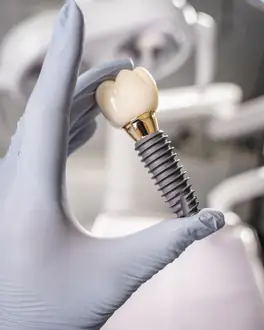
Agendar avaliação -
T.02
Lentes de Contato Dental
Transformações sutis e planejadas para harmonizar seu sorriso.
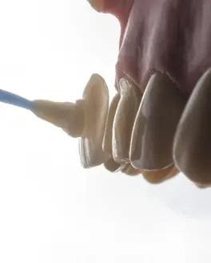
Agendar avaliação -
T.03
Alinhadores Transparentes
Ortodontia discreta com planejamento digital.
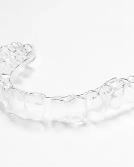
Agendar avaliação - T.04 Clareamento Dental Um sorriso mais luminoso preservando a saúde dos dentes. Agendar avaliação
-
T.05
Reabilitação Oral
Planejamento integrado para recuperar estética e função.
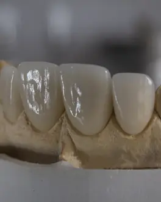
Agendar avaliação - T.06 Odontologia Preventiva Cuidado contínuo para manter sua saúde bucal. Agendar avaliação
Tecnologia que transforma
precisão em tranquilidade.
Antes de qualquer procedimento, você vê o seu caso. Escaneamos, medimos e simulamos digitalmente cada etapa — menos moldagens desconfortáveis, menos incertezas e um plano que você entende do começo ao fim.
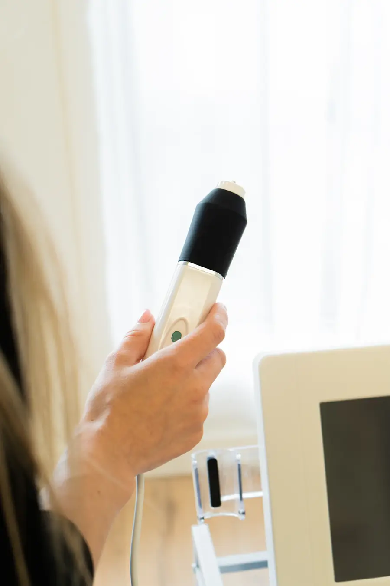
Visualização ilustrativa.
Seu sorriso, planejado
antes de acontecer.
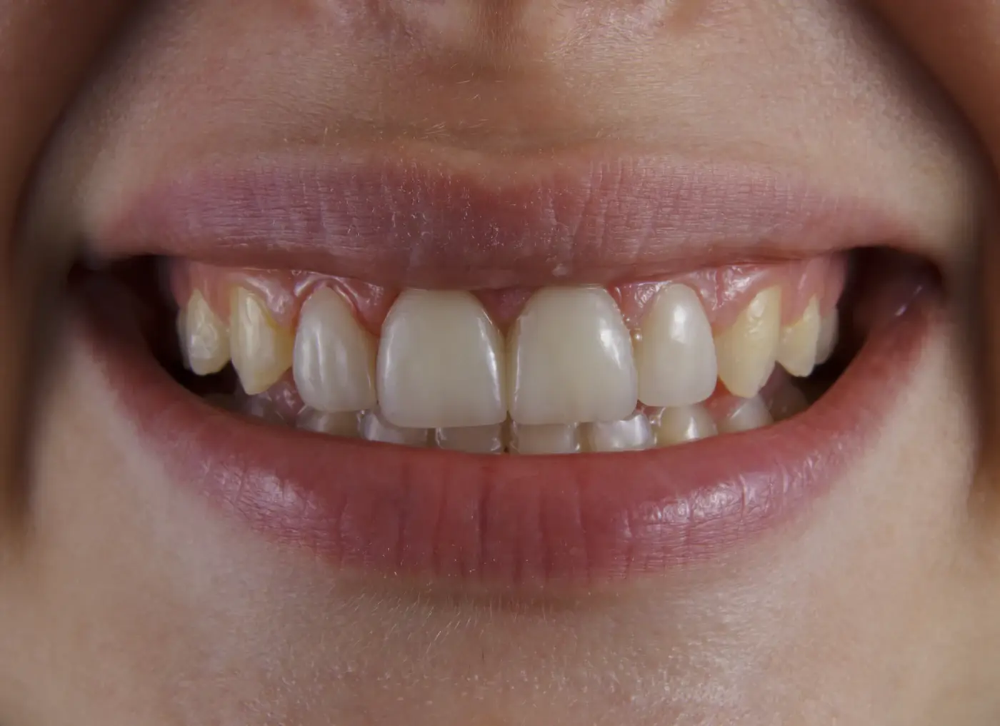
Planejamento Seis lentes em proporção 1 : 0,7 : 0,6, com as bordas acompanhando a curva do lábio inferior.
Quero avaliar o meu casoExperiência em
cada detalhe.
Uma equipe que planeja junto: cada caso é discutido entre especialistas antes de chegar até você. Abaixo, três dos nossos oito especialistas.
Criamos um espaço onde
você pode se sentir tranquilo.
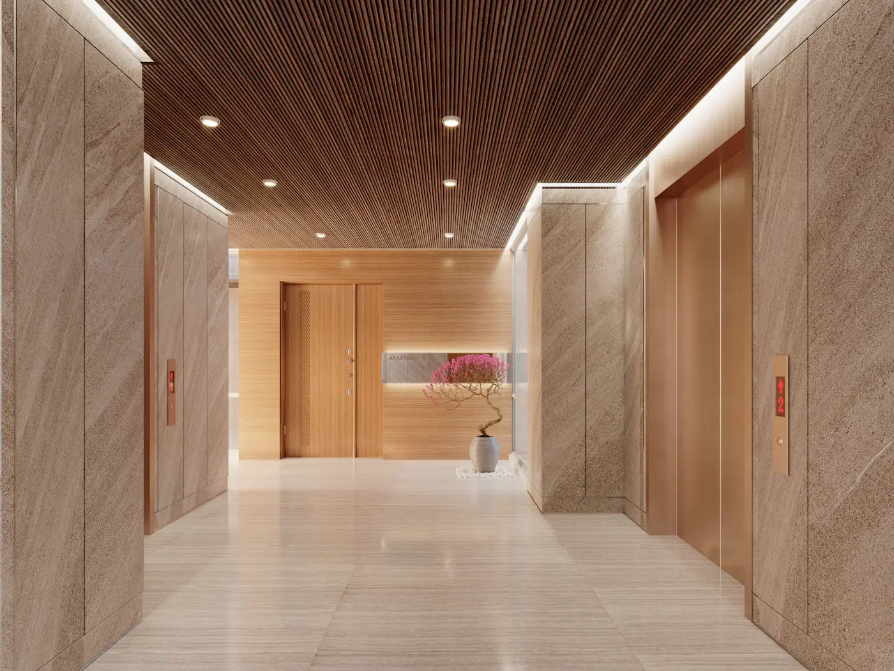
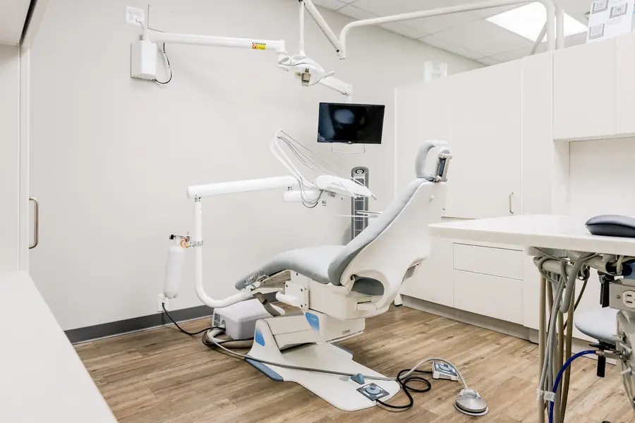
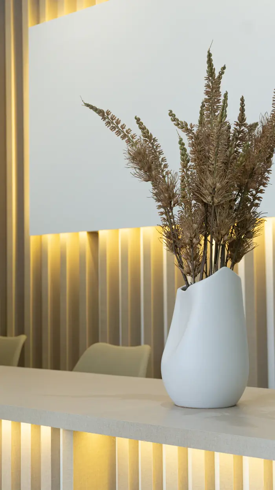
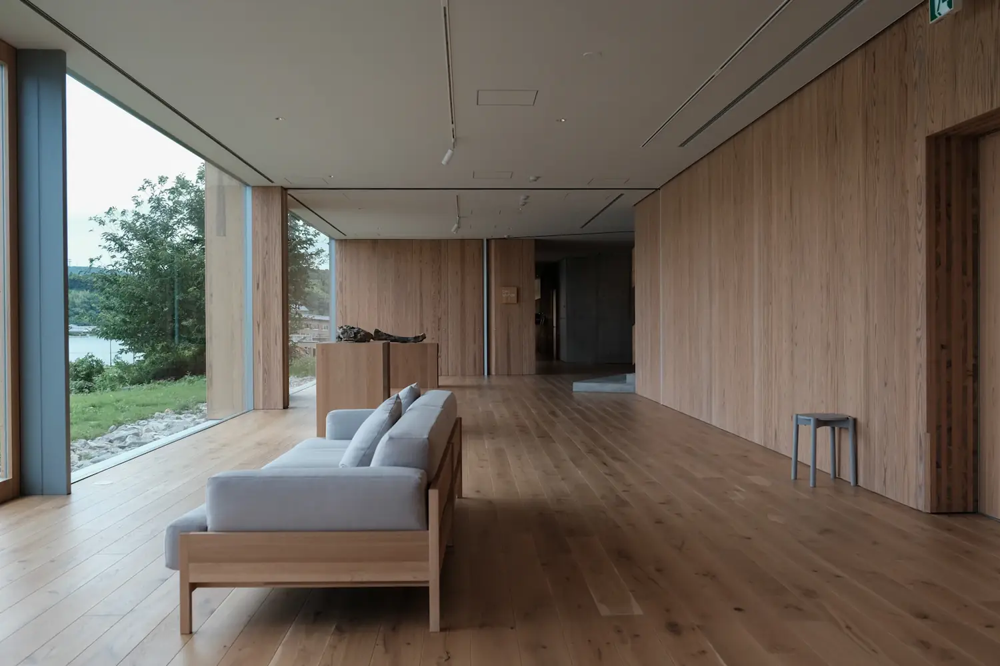
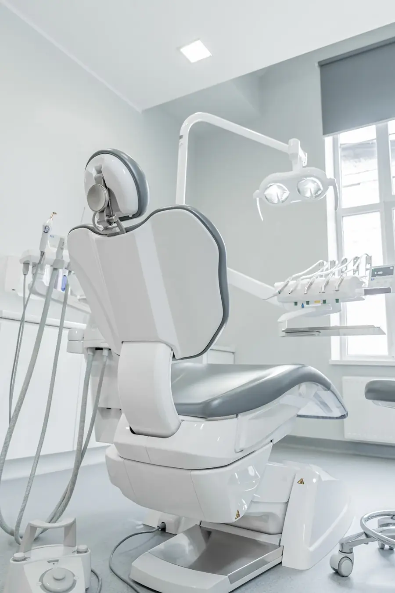
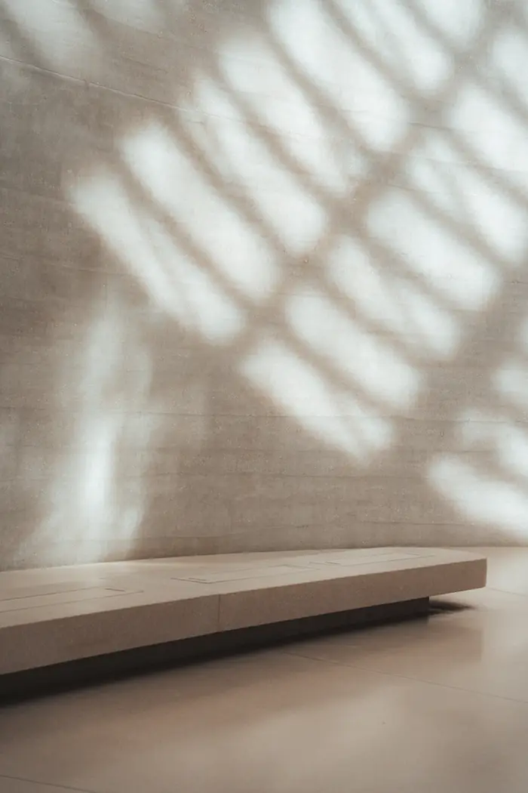
Materiais naturais, luz indireta e silêncio acústico. Cada ambiente foi pensado para que a consulta comece antes da cadeira — com calma.
Agendar uma avaliaçãoHistórias que começam
com confiança.
“Adiei o implante por anos, por medo. A Dra. Helena me mostrou cada etapa no planejamento digital antes de começar — e isso mudou tudo.”
“Desde a primeira consulta me senti segura. Todo o tratamento foi explicado com calma e o resultado ficou muito mais natural do que eu imaginava.”
“Usei alinhadores por dez meses e quase ninguém percebeu. As consultas eram pontuais e eu sempre saía sabendo qual era o próximo passo.”
“Queria um clareamento sem sensibilidade e sem aquele branco artificial. Ficou luminoso e, principalmente, com cara de dente de verdade.”
Seu novo sorriso começa
com uma conversa.
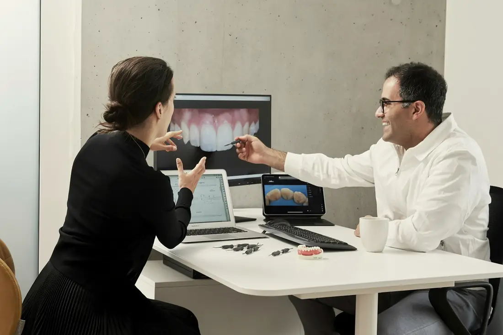
- 01
Avaliação
Entendemos suas necessidades e expectativas.
- 02
Diagnóstico
Realizamos exames e análise digital.
- 03
Planejamento
Criamos um plano personalizado.
- 04
Tratamento
Executamos cada etapa com acompanhamento próximo.
Pronto para cuidar
do seu sorriso?
Agende uma avaliação e descubra o tratamento ideal para você.
Agendar pelo WhatsAppAtendimento de segunda a sexta
08h às 19h
- 01Retornamos pelo WhatsApp no período que você escolher.
- 02Marcamos a avaliação no dia e horário melhores para você.
- 03Você recebe o planejamento e o orçamento por escrito, sem compromisso.
Recebemos sua solicitação.
Nossa equipe entrará em contato em breve.
Elyra Odontologia
- Endereço
- Av. República, 1250
Centro - Horário
- Segunda a sexta
08h às 19h - Telefone
- (00) 0000-0000
- (00) 99999-9999